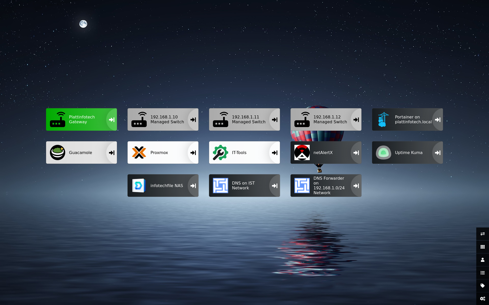

Heimdal is a self-hosted project focused on organizing and managing server services in one place. I worked with container configuration, networking, service monitoring, and documentation to make the setup easier to maintain. This project helped me practice reliability, organization, and practical infrastructure management.